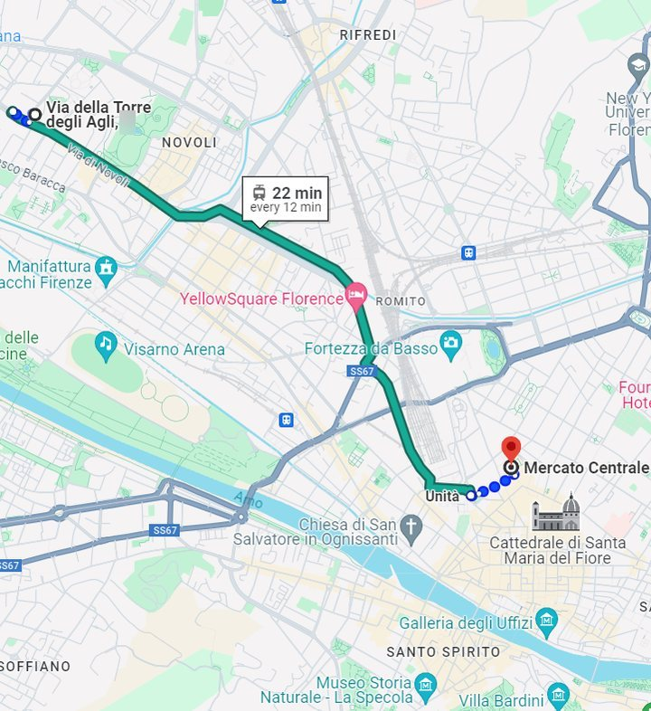

Typical products and restaurants
Florence is a city rich in culinary traditions. From typical dishes to recommended restaurants, here is a short guide to the best of the local food.
Bistecca alla Fiorentina
An icon of Florence: a thick, succulent beef steak, expertly grilled and generally served rare to keep all its juiciness. A must for any meat lover visiting the city.
Schiacciata
The typical Tuscan flatbread, crunchy outside and soft inside. Perfect filled with cold cuts, cheese or vegetables, ideal for a quick, tasty snack. You will find it in many local bakeries, freshly baked and still warm.
Lampredotto
Florence's typical street food, made with a part of the cow's stomach. Served in a sandwich with green sauce or spicy sauce, it is a unique culinary experience not to be missed. Look for the traditional food trucks in some squares and streets of the city.
Ribollita
A rustic soup of Tuscan cuisine, made with stale bread, beans and vegetables. Rich and comforting, it represents the simplicity and genuineness of the Tuscan peasant tradition. Perfect for warming up in winter.
Wine
Tuscany is famous for fine wines such as Chianti, Brunello di Montalcino and Vino Nobile di Montepulciano: unique, complex wines that are the perfect companion for traditional Tuscan dishes.
Vin Santo
The typical Tuscan dessert wine, sweet and aromatic, often served with cantucci, the traditional almond biscuits: the perfect end to a Tuscan meal.
Central Market (Mercato Centrale)
A lively covered market in the heart of Florence. Fresh local products, cheese, cold cuts and many Tuscan specialities, plus numerous food stalls where you can taste traditional dishes prepared on the spot.

Diladdarno restaurant
In the Oltrarno area, an authentic experience with typical Florentine dishes. Cosy atmosphere and friendly service: the ideal place for a quiet, delicious meal after a day of exploring.
5 e Cinque restaurant
In the heart of Florence, in Piazza della Passera, renowned for its vegetarian cuisine and welcoming atmosphere. An alternative menu of vegetable-based dishes made with fresh, high-quality ingredients.
Banco a Ristoro restaurant
If you have a car and want to explore the surroundings of Florence: located just outside the city, in Molino del Piano, it offers innovative cuisine that enhances fresh, high-quality traditional ingredients. Combine it with a visit to nearby places such as the Castello del Trebbio, the windmill of Monterifrassine and the renowned Castello di Nipozzano: beautiful landscapes, history and excellent wines and products.
Local festivals (Sagre)
If you have a car, the sagre are the perfect way to join the typical festive gatherings of Tuscan towns. These seasonal festivals celebrate local products such as truffles, game, olive oil and many other dishes: a unique chance to taste regional specialities in a festive atmosphere, with events all year round across Tuscany and the province of Florence. Find them here:
Prodotti tipici e ristoranti
Firenze è una città ricca di tradizioni culinarie. Dai piatti tipici ai ristoranti consigliati, ecco una breve guida per orientarti tra il meglio della gastronomia locale.
La bistecca alla fiorentina
Un'icona di Firenze: una bistecca di manzo alta e succulenta, cotta sapientemente alla griglia e di solito servita al sangue per mantenere tutta la sua succosità. Un must per ogni amante della carne in visita in città.
La schiacciata
Il tipico pane toscano, croccante fuori e morbido dentro. Perfetta farcita con salumi, formaggi o verdure, ideale per uno spuntino veloce e gustoso. La trovi in molte panetterie della zona, appena sfornata e ancora calda.
Il lampredotto
Il piatto tipico dello street food fiorentino, preparato con una parte dello stomaco del bovino. Servito nel panino con salsa verde o salsa piccante, è un'esperienza da non perdere. Lo trovi nei tradizionali camioncini in alcune piazze e strade di Firenze.
La ribollita
Una zuppa rustica della cucina toscana, fatta con pane raffermo, fagioli e verdure. Ricca e confortante, rappresenta la semplicità e la genuinità della tradizione contadina toscana. Perfetta per scaldarsi d'inverno.
Il vino
La Toscana è famosa per vini pregiati come il Chianti, il Brunello di Montalcino e il Vino Nobile di Montepulciano: vini dal carattere unico e complesso, perfetti con i piatti della tradizione toscana.
Il vin santo
Il tipico vino da dessert toscano, dolce e aromatico, spesso servito con i cantucci, i tradizionali biscotti alle mandorle: la chiusura perfetta di un pasto toscano.
Mercato centrale
Un vivace mercato coperto nel cuore di Firenze. Prodotti freschi locali, formaggi, salumi e tante specialità toscane, oltre a numerosi stand gastronomici dove assaporare piatti tradizionali preparati al momento.
Ristorante Diladdarno
Nell'Oltrarno, un'esperienza autentica con i piatti tipici della tradizione fiorentina. Atmosfera accogliente e servizio cordiale: il posto ideale per un pasto tranquillo e delizioso dopo una giornata in giro.
Sito del ristorante Diladdarno
Ristorante 5 e Cinque
In pieno centro, in Piazza della Passera, noto per la cucina vegetariana e l'atmosfera accogliente. Un menù alternativo a base di verdure, con ingredienti freschi e di qualità.
Sito del ristorante 5 e Cinque
Ristorante Banco a Ristoro
Se hai la macchina e vuoi esplorare i dintorni di Firenze: appena fuori città, in località Molino del Piano, offre una cucina innovativa che valorizza ingredienti freschi e della tradizione. Abbinalo a una visita ai luoghi vicini come il Castello del Trebbio, il Mulino a Vento di Monterifrassine e il rinomato Castello di Nipozzano: paesaggi splendidi, storia e vini e prodotti d'eccellenza.
Sito del ristorante Banco a Ristoro
Sagre di paese
Se hai la macchina, le sagre sono l'occasione perfetta per partecipare ai momenti di festa tipici dei paesi toscani. Queste feste stagionali celebrano prodotti locali come tartufo, cacciagione, olio d'oliva e molti altri piatti: un'occasione unica per gustare le specialità regionali in un'atmosfera festosa, con eventi tutto l'anno in Toscana e in provincia di Firenze. Le trovi qui:
Productos típicos y restaurantes
Florencia es una ciudad rica en tradiciones culinarias. De los platos típicos a los restaurantes recomendados, aquí tienes una breve guía para orientarte entre lo mejor de la gastronomía local.
La bistecca alla fiorentina
Un icono de Florencia: un filete de ternera grueso y jugoso, cocinado hábilmente a la parrilla y normalmente servido poco hecho para conservar toda su jugosidad. Imprescindible para todo amante de la carne que visite la ciudad.
La schiacciata
El pan típico toscano, crujiente por fuera y tierno por dentro. Perfecta rellena de embutidos, quesos o verduras, ideal para un tentempié rápido y sabroso. La encontrarás en muchas panaderías de la zona, recién horneada y aún caliente.
El lampredotto
El plato típico de la comida callejera florentina, preparado con una parte del estómago del bovino. Servido en un panecillo con salsa verde o salsa picante, es una experiencia que no te puedes perder. Lo encontrarás en los tradicionales puestos ambulantes de algunas plazas y calles de Florencia.
La ribollita
Una sopa rústica de la cocina toscana, hecha con pan duro, alubias y verduras. Rica y reconfortante, representa la sencillez y la autenticidad de la tradición campesina toscana. Perfecta para entrar en calor en invierno.
El vino
La Toscana es famosa por vinos de gran calidad como el Chianti, el Brunello di Montalcino y el Vino Nobile di Montepulciano: vinos de carácter único y complejo, perfectos con los platos de la tradición toscana.
El vin santo
El típico vino de postre toscano, dulce y aromático, a menudo servido con los cantucci, los tradicionales bizcochos de almendra: el cierre perfecto de una comida toscana.
Mercado central
Un animado mercado cubierto en el corazón de Florencia. Productos frescos locales, quesos, embutidos y muchas especialidades toscanas, además de numerosos puestos gastronómicos donde degustar platos tradicionales preparados al momento.
Restaurante Diladdarno
En el Oltrarno, una experiencia auténtica con los platos típicos de la tradición florentina. Ambiente acogedor y servicio cordial: el lugar ideal para una comida tranquila y deliciosa después de un día de exploración.
Web del restaurante Diladdarno (en inglés)
Restaurante 5 e Cinque
En pleno centro, en Piazza della Passera, conocido por su cocina vegetariana y su ambiente acogedor. Un menú alternativo a base de verduras, con ingredientes frescos y de calidad.
Web del restaurante 5 e Cinque
Restaurante Banco a Ristoro
Si tienes coche y quieres explorar los alrededores de Florencia: a las afueras de la ciudad, en Molino del Piano, ofrece una cocina innovadora que pone en valor ingredientes frescos y de la tradición. Combínalo con una visita a lugares cercanos como el Castello del Trebbio, el molino de viento de Monterifrassine y el renombrado Castello di Nipozzano: paisajes espléndidos, historia y vinos y productos de excelencia.
Web del restaurante Banco a Ristoro (en inglés)
Fiestas populares (Sagre)
Si tienes coche, las sagre son la ocasión perfecta para participar en las fiestas típicas de los pueblos toscanos. Estas fiestas estacionales celebran productos locales como la trufa, la caza, el aceite de oliva y muchos otros platos: una oportunidad única para degustar especialidades regionales en un ambiente festivo, con eventos durante todo el año en la Toscana y la provincia de Florencia. Las encuentras aquí:
Produits typiques et restaurants
Florence est une ville riche en traditions culinaires. Des plats typiques aux restaurants conseillés, voici un petit guide pour vous repérer parmi le meilleur de la gastronomie locale.
La bistecca alla fiorentina
Une icône de Florence : une côte de bœuf épaisse et juteuse, savamment cuite au gril et généralement servie saignante pour garder tout son moelleux. Un incontournable pour tout amateur de viande de passage en ville.
La schiacciata
Le pain toscan typique, croustillant dehors et moelleux dedans. Parfaite garnie de charcuterie, de fromage ou de légumes, idéale pour un en-cas rapide et savoureux. Vous la trouverez dans de nombreuses boulangeries du quartier, tout juste sortie du four et encore chaude.
Le lampredotto
Le plat typique du street food florentin, préparé avec une partie de l’estomac du bœuf. Servi dans un petit pain avec de la sauce verte ou de la sauce piquante, c’est une expérience à ne pas manquer. Vous le trouverez dans les camions traditionnels sur certaines places et rues de Florence.
La ribollita
Une soupe rustique de la cuisine toscane, faite avec du pain rassis, des haricots et des légumes. Riche et réconfortante, elle incarne la simplicité et l’authenticité de la tradition paysanne toscane. Parfaite pour se réchauffer en hiver.
Le vin
La Toscane est célèbre pour ses grands vins comme le Chianti, le Brunello di Montalcino et le Vino Nobile di Montepulciano : des vins au caractère unique et complexe, parfaits avec les plats de la tradition toscane.
Le vin santo
Le vin de dessert toscan typique, doux et aromatique, souvent servi avec les cantucci, les traditionnels biscuits aux amandes : la conclusion parfaite d’un repas toscan.
Mercato centrale
Un marché couvert animé au cœur de Florence. Produits frais locaux, fromages, charcuterie et de nombreuses spécialités toscanes, ainsi que plusieurs stands gastronomiques où déguster des plats traditionnels préparés à la minute.
Restaurant Diladdarno
Dans l’Oltrarno, une expérience authentique avec les plats typiques de la tradition florentine. Atmosphère accueillante et service chaleureux : l’endroit idéal pour un repas tranquille et délicieux après une journée de visites.
Site du restaurant Diladdarno (en anglais)
Restaurant 5 e Cinque
En plein centre, Piazza della Passera, connu pour sa cuisine végétarienne et son atmosphère accueillante. Un menu alternatif à base de légumes, avec des ingrédients frais et de qualité.
Restaurant Banco a Ristoro
Si vous avez une voiture et voulez explorer les environs de Florence : juste à la sortie de la ville, au lieu-dit Molino del Piano, il propose une cuisine innovante qui met en valeur des ingrédients frais et de tradition. Combinez-le avec une visite des lieux voisins comme le Castello del Trebbio, le moulin à vent de Monterifrassine et le célèbre Castello di Nipozzano : paysages splendides, histoire, vins et produits d’excellence.
Site du restaurant Banco a Ristoro (en anglais)
Fêtes de village (sagre)
Si vous avez une voiture, les sagre sont l’occasion parfaite de participer aux moments de fête typiques des villages toscans. Ces fêtes saisonnières célèbrent des produits locaux comme la truffe, le gibier, l’huile d’olive et bien d’autres plats : une occasion unique de goûter les spécialités régionales dans une ambiance festive, avec des événements toute l’année en Toscane et dans la province de Florence. Vous les trouverez ici :